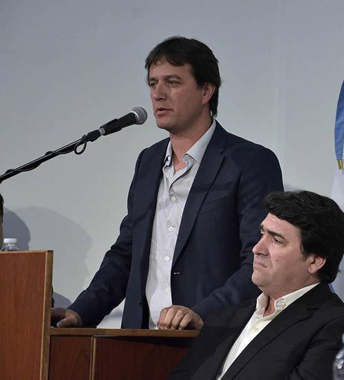
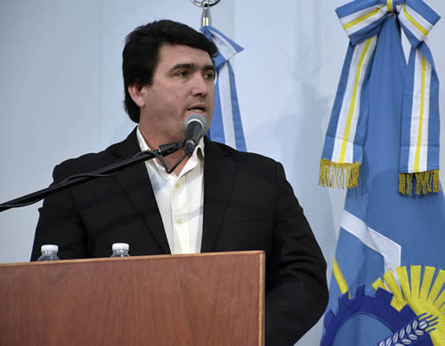

Real Chubut - Agencia de Noticias


Das Neves transfirió más de 70 millones de pesos para 7 localidades de la provincia

Fondos provenientes del bono internacional
Cabe recordar que el destino de este dinero fue consensuado por cada intendente con el gobierno provincial. Se realizarán obras de servicios, pavimentación y otras obras prioritarias.
El gobernador del Chubut, Mario Das Neves, firmó este lunes en Rawson convenios con siete localidades de la provincia que hacen efectivo la transferencia de más de 70 millones de pesos para la ejecución de obras de infraestructura.
La ceremonia se realizó ante un Salón de los Constituyentes colmado que contó con la presencia de los jefes comunales de Las Plumas, Nilda Tolosa; de Los Altares, Mario Oviedo; de Telsen, Leonardo Bowman; de 28 de Julio; Omar Burgoa; de Puerto Pirámides, Javier Roldán; de Rada Tilly, Luis Juncos, y de la comuna rural de Dique Ameghino, Cristal Azparren.
Además también asistieron el ministro de Economía, Pablo Oca, y Alberto Gilardino, quien dejará de ser secretario de Pesca para ser ministro Coordinador de Gabinete, y otros miembros del gabinete provincial, diputados provinciales y el diputado nacional Sixto Bermejo.
Al hacer uso de la palabra, el mandatario destacó que “es una jornada realmente importante, una más de estas que venimos teniendo, que es nada más y nada menos que traducir en los hechos, una ley importante que fue consensuada en su momento”.
Puso énfasis en que “pasado mañana los 11 municipios que firmaron la primera vez, en un acto como este, van a empezar a recibir los fondos para poder empezar las obras”.
“Es una oportunidad para darle trabajo a la gente de cada comunidad, para que tengamos una desocupación muy baja en nuestras localidades donde realmente no hay muchas alternativas y termina siendo el municipio el que de alguna manera tiene que proveer. Por eso entendemos que por un tiempo importante mientras se realicen estas obras, la gente de cada una de esas localidades puede acceder a un trabajo”, expresó Das Neves.
DETALLE
Durante el acto, el mandatario provincial transfirió 4.294.433,80 de pesos a la localidad del Dique Ameghino, 5.417.276,55 pesos a Las Plumas, 4.556.081,70 pesos para los Altares, en tanto 5.288.028,01 pesos fueron destinados a Telsen, 11.718.000 pesos para 28 de Julio, 11.216.275,99 pesos a Puerto Pirámides y 29.550.000 pesos a Rada Tilly.
MANO DE OBRA LOCAL
En este sentido la intendente de Las Plumas, Nilda Tolosa, remarcó que “quiero agradecer esta firma que nos va a permitir empezar con estas pequeñas obras, que sobre todo van a fortalecer a nuestro pueblo, porque todas ellas van a ser hechas con mano de obra local”.
TRABAJO EN CONJUNTO
Por su parte, el jefe comunal de Los Altares Mario Oviedo, indicó que “hoy es un día muy especial porque nosotros podemos darle a cada una de nuestras comunidades el crecimiento que se merecen, estoy muy contento por el trabajo en conjunto con el gobierno provincial” y esto se ve reflejado en el terreno “porque siempre hay algún funcionario del gabinete provincial en nuestra comunidad”.
En la misma línea el jefe comunal de Telsen, Leonardo Bowman, agradeció “en nombre de nuestra comunidad por la firma de este convenio, tenemos que reconocer que en diez meses estamos con la firma del presente convenio que nos permite llegar con una solución que mejora la calidad de vida de nuestros habitantes y en segundo lugar podemos reactivar la obra pública para la mano de obra local generando expectativas laborales”.
En tanto el intendente de 28 de Julio Omar Burgoa, adelantó que “es un día muy importante para mi comunidad porque vamos a poder empezar a trabajar con algunos proyectos que tenemos ya encaminados, encarando etapas nuevas sobre todo en lo productivo donde desde 28 de Julio hemos puesto mucho énfasis an esta política pública”.
“Me parece que es lo que necesitamos para desarrollar la economía genuina a través de su parque industrial que está aspirando a recibir inversiones de la minería, no solamente de lo que podamos hacer en el futuro, sino de lo que ya tenemos hace más de 50 años que es el cabril de arcilla” y recordó que “en Chubut sigue sin haber una planta de porcelana sanitaria”.
Es por eso que “vamos a trabajar codo a codo con este Gobierno para tratar de que a través del Ministerio de la Producción podamos tentar a uno de los fabricantes del país, que es Ferrum, para que instale una fábrica de sanitarios en 28 de Julio que ahora va a tener gas, además de agua y energía”.
“Sabemos que estos recursos son recursos limitados que son parte de un empréstito que ha tomado la provincia así que hay que ser muy responsable con el uso de estos fondos, por eso vamos a tratar de destinarlo para sacarle el máximo de los beneficios tratando de cumplir con las obras en tiempo y forma porque los tiempos también importan y vamos a tratar de hacer una distribución equitativa de lo que es trabajo, esparcimiento, salud e infraestructura para nuestro pueblo”.
“MEJORAR LA CALIDAD DE VIDA”
El intendente de Pirámides Javier Roldán, puso énfasis en que “tenemos en nuestra localidad la necesidad de llevar adelante importantes obras teniendo en cuenta la responsabilidad que tenemos en una localidad turística con el tema de los servicios, por eso parte de este monto va a ser destinado a energías alternativas, el agua y obras que hace años no teníamos y hoy podemos reflotar para mejorar la calidad de vida de nuestros pobladores”.
Por último el intendente de Rada Tilly, Luis Juncos, remarcó que “tenemos que ser responsables en qué vamos a afectar ese dinero, en nuestro caso particular, vamos a hacer obras viales, de pavimentación y esos fondos van a ser recuperados y vamos a generar un fondo importante que nos va a permitir dar continuidad a diferentes obras”.

“Obras que tienen que ver con el saneamiento, la ampliación de nuestras redes de agua tratada que son aguas que se procesan en nuestra planta de tratamiento y que llegan a nuestros espacios públicos”, concluyó Juncos.
PUBLICIDAD